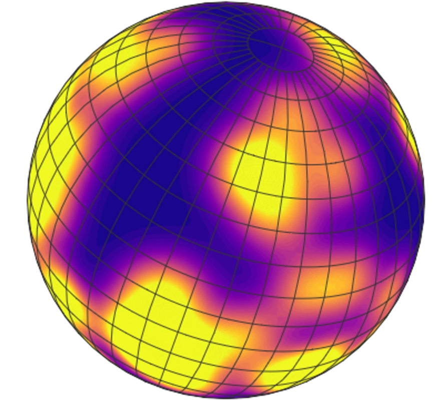
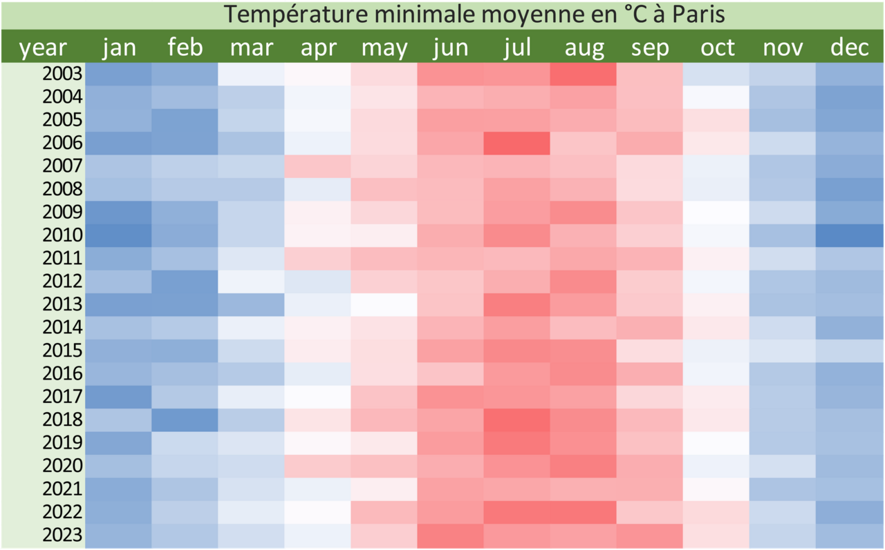
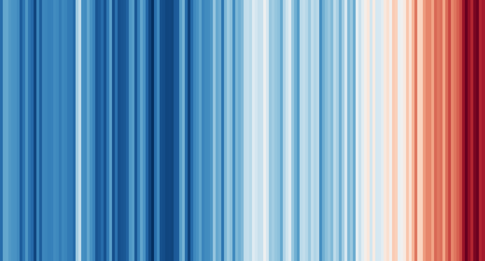
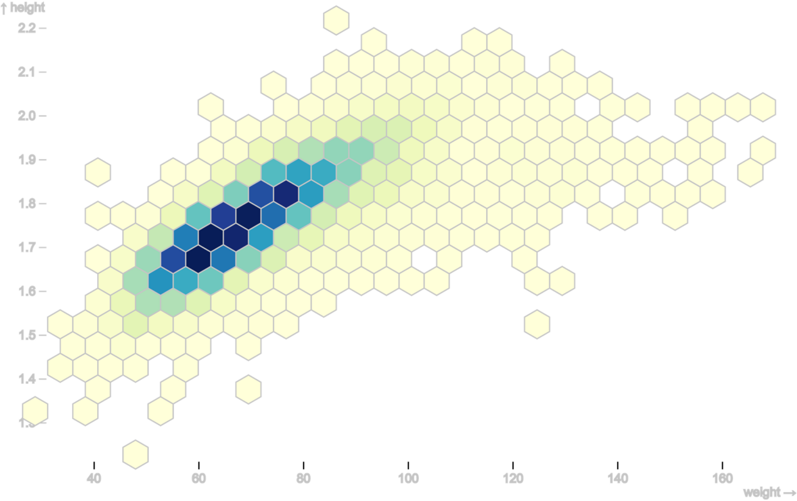
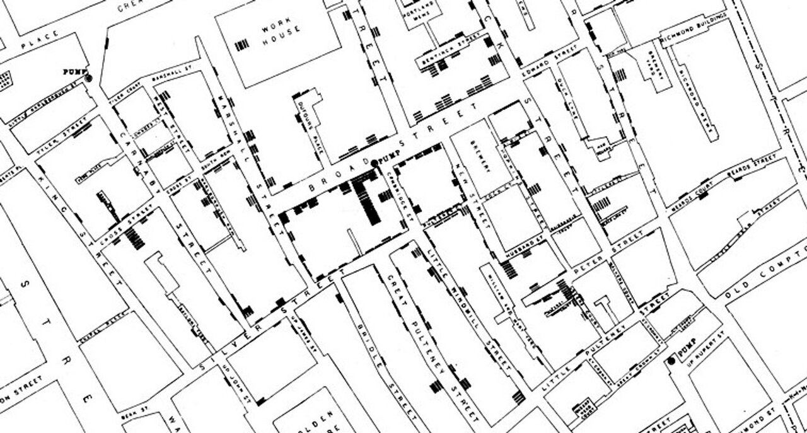
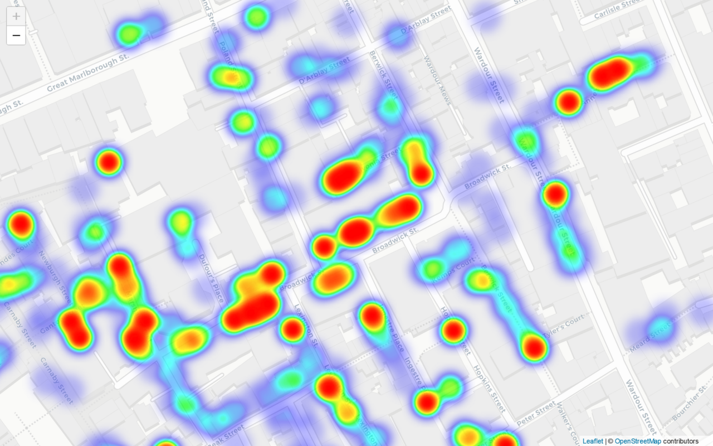

Historique
L’histoire des cartes de chaleur s'étend sur plusieurs décennies, évoluant significativement dans le domaine de la visualisation des données. Initiées dans la météorologie et la cartographie dans les années 1960-1970 pour représenter la distribution spatiale des températures, elles ont ensuite été intégrées aux statistiques dans les années 1980, devenant un outil puissant pour visualiser la distribution des données numériques.
Dans les années 1990, les cartes de chaleur ont été intégrées dans les logiciels de visualisation de données, facilitant leur utilisation dans des domaines tels que l'analyse des données commerciales et la navigation sur les sites web. De 2000 à 2010, elles ont gagné en popularité dans le domaine du web design, notamment pour analyser le comportement des utilisateurs.
Depuis les années 2010, les cartes de chaleur sont devenues omniprésentes dans l'analyse des données, le machine learning, la biologie, la finance, et divers autres domaines. Leur utilisation continue d'évoluer avec les avancées des technologies de visualisation et de traitement des données. Au fil du temps, les cartes de chaleur ont connu des améliorations en termes de précision, convivialité et intégration avec d'autres outils d'analyse de données, contribuant ainsi à leur adoption généralisée.
Source : Philippe Riviere
Pourquoi des cartes de chaleur ?
Une carte de chaleur, également connue sous le nom de carte thermique (ou heatmap en anglais), est une représentation graphique des données où les valeurs individuelles d’un tableau sont représentées par des couleurs. Les couleurs varient en intensité en fonction des valeurs numériques associées à chaque emplacement dans le tableau.
Traditionnellement, les zones avec des valeurs plus élevées apparaîtront avec des couleurs plus intenses, tandis que les zones avec des valeurs plus basses auront des couleurs plus pâles. D'où leur nom.
Elles représentent un outil visuel efficace pour visualiser la distribution spatiale ou temporelle des données quantitatives de manière intuitive, en mettant en évidence des motifs, des tendances, des schémas et des variations.
Pourquoi les utiliser?
- Visualisation intuitive des tendances et concentrations : les cartes de chaleur mettent en évidence les zones de concentration ou de densité dans des ensembles de données spatiales, que ce soit sur une carte géographique ou dans d'autres contextes.
Pourquoi ne pas les utiliser ?
- Sensibilité à l'échelle et manque de précision : les cartes de chaleur peuvent être sensibles aux variations d'échelle, entraînant des interprétations différentes des données. Combinées à des données avec une résolution spatiale insuffisante, des erreurs d'interprétations peuvent être commises.
- Complexité des données : pour des ensembles de données très complexes, l'utilisation de cartes de chaleur peut ne pas être la meilleure option, car elle pourrait ne pas être en mesure de capturer toutes les nuances des relations entre les données.
La carte de chaleur et ses variantes
Carte de chaleur “basique”
Les données d’un tableau sont transformées en une carte de chaleur en affectant une couleur aux valeurs des données à l’aide d’un spectre de couleurs contrasté.

Tableau de données transformé en carte de chaleur avec Excel
Warming stripes
Les warming stripes (ou “rayures de chaleur”) sont un célèbre exemple de carte de chaleur en forme de bande.
Ce graphique visualise pour chaque année de 1850 à 2022, l’écart de température de la terre par rapport à la moyenne de référence mesurée entre 1960 et 1990.
Source des données : Met Office Hadley Centre observations
Dataviz : lien
Hexbin
Source : Observable Hexbin heatmap
Les athlètes olympiques sont placés sur cette carte thermique en fonction de leur poids et de leur taille, mis à l'échelle par x et y. Ensuite, leurs positions (en pixels) sont regroupées en hexagones, qui sont remplis d'une couleur selon le nombre d’athlètes avec les mêmes caractéristiques.
Carte
Carte de chaleur réalisé à partir du célèbre exemple de dataviz “Cases of Cholera in Soho (London) in 1854”.
Original map by John Snow showing the clusters of cholera cases in the London epidemic of 1854, drawn and lithographed by Charles Cheffins.
Carte de chaleur de la carte de John Snow.
Source : lien
Recommandations
Les données
- Les cartes de chaleur permettent de visualiser les valeurs numériques
Recommandation 1
- Ne pas confondre carte de chaleur et carte choroplèthes
Les cartes choroplèthes montrent des données regroupées par limites géographiques comme les pays, les régions, les communes ou même des entités géographiques plus petites. Contrairement aux cartes choroplèthes, les cartes thermiques montrent la proportion d'une variable sur une taille de grille arbitraire, mais généralement petite, indépendante des frontières géographiques.
Recommandation 2
- Adapter la palette de couleurs au type de données
Choisissez une palette de couleurs adaptée au type de données que vous visualisez. Par exemple, utilisez une palette de couleurs chaudes (rouges, oranges) pour représenter des valeurs plus élevées et une palette de couleurs froides (bleus, verts) pour des valeurs plus basses.
Recommandation 3
- Utiliser des palettes de couleurs divergentes
Une palette de couleurs divergentes est une séquence de couleurs conçue spécifiquement pour représenter des données qui ont une valeur neutre ou un point central, et qui divergent de part et d'autre de ce point. Ces palettes de couleurs sont souvent utilisées pour visualiser des données où il y a un point de référence significatif, tel que zéro ou une moyenne, et où les valeurs peuvent être positives et négatives.
Recommandation 4
- Utiliser des palettes de couleurs monochromes
Les palettes de couleurs à une seule teinte, comme les dégradés de couleur allant du clair au foncé ou vice versa, sont souvent efficaces pour représenter les variations de valeurs sans ajouter de complexité visuelle excessive.
Recommandation 5
- Utiliser une palette de couleur perceptuellement uniforme
C’est une séquence de couleurs où les changements de couleur correspondent à des changements égaux dans les valeurs sous-jacentes que les couleurs représentent. En d'autres termes, lorsque vous observez la palette de couleurs, les différences perçues entre les couleurs sont proportionnelles aux différences réelles dans les données. L'idée derrière une palette perceptuellement uniforme est de minimiser les distorsions visuelles lors de la représentation graphique des données. Si une palette de couleurs n'est pas perceptuellement uniforme, il peut y avoir des zones où les changements de couleur sont perçus de manière disproportionnée par rapport aux variations réelles des données, ce qui peut entraîner une interprétation incorrecte.
Recommandation 6
- Éviter les couleurs saturées aux extrémités
Si votre heatmap utilise une échelle de couleurs allant d'une valeur minimale à maximale, évitez d'utiliser des couleurs très saturées aux extrémités, car cela peut attirer trop l'attention sur les valeurs extrêmes.
Recommandation 7
- Ne pas oublier d’ajouter une légende
Elle fournit des informations sur la correspondance entre les couleurs de la carte de chaleur et les valeurs numériques ou catégorielles qu'elles représentent.
Testez par vous-même
Outils
Sélection d’outils
Nous vous proposons des diagrammes, des variantes et des lignes directrices, mais peut-on les mettre en œuvre concrètement avec les outils graphiques ?
La liste des logiciels de visualisation de données est longue et en faire une analyse exhaustive serait fastidieuse et peu pratique à utiliser. Nous avons choisi quelques outils connus, facile d’accès pour des débutants et qui permettent d’exporter les graphiques dans un format vectoriel SVG (sauf pour l’outil Tableau Software).
Dans ce format, les diagrammes se composent d’un ensemble d’objets graphique (polygones, lignes, cercles et textes) qu’il est possible d’importer dans des outils de présentation tels que PowerPoint, Draw ou des outils vectoriels dédiés comme Illustrator ou son équivalent libre Inkscape. Il est alors possible de faire manuellement des modifications qui ne sont pas ou difficilement réalisables avec l’outil de dataviz.
Exemples
Les exemples qui sont proposés présentent des réalisations basiques. Pensez à sélectionner l’onglet correspondant à la carte de chaleur.
EXCEL
En savoir +
- Une table ou chaque cellule est colorée en fonction de sa valeur est une carte de chaleur réalisable avec l’outil Excel. N’hésitez pas à regarder des tutoriels pour les construire si besoin.
- Un copier-coller de la table dans un outil graphique vectoriel est possible
GOOGLE SHEET (on line)
En savoir +
- Une table ou chaque cellule est colorée en fonction de sa valeur est une carte de chaleur réalisable avec l’outil Google Sheet. N’hésitez pas à regarder des tutoriels pour les construire si besoin.
- Un copier-coller de la table dans un outil graphique vectoriel est possible

TABLEAU SOFTWARE
Le site Tableau public propose de nombreux exemples de réalisation de carte de chaleur - heatmap
En savoir +
- L’outil Tableau ne propose pas d’exportation au format SVG mais au format PDF. Dans ce format, avec les outils vectoriels, l’extraction des formes du graphique reste possible mais pas très pratique.

RAWgraph (on line)
En savoir +
- Cet outil en ligne simple permet de réaliser des cartes de chaleur.
- Sa simplicité d’utilisation et sa fonction d’exportation au format SVG le place comme une possible alternative à des outils plus complexes comme les tableurs.
Les langages de programmation
Sachez enfin, qu’avec les librairies graphiques associées aux langages de programmation R, Python ou JavaScript, il est possible de réaliser tous les diagrammes et les recommandations.
Liens vers le code de graphiques basiques :
JavaScript Observablehq (1)
R (R Graph Gallery)(2),
Python (Python Graph Gallery)(2),
JavaScript d3.js (d3.js Graph Gallery)(2) .
(1) Notebooks observablehq de l’association TDV
(2) Site de Yan Holtz (en anglais) et
Le site The Data Visualization Catalogue propose aussi des exemples réalisés avec de multiples outils ou langages de programmation (en anglais).